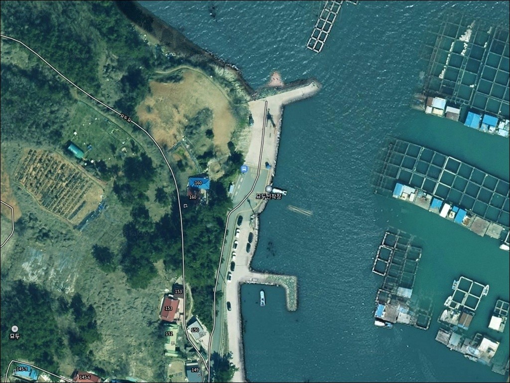
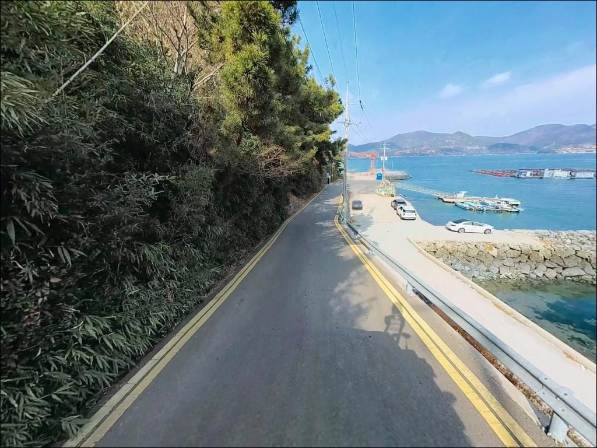
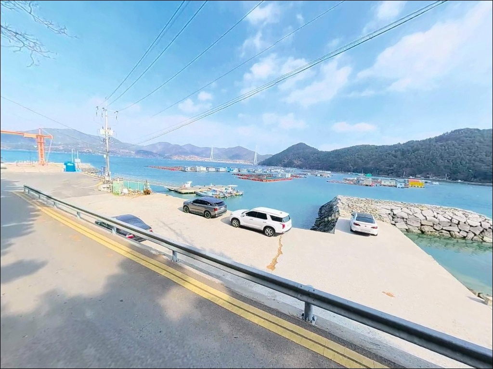
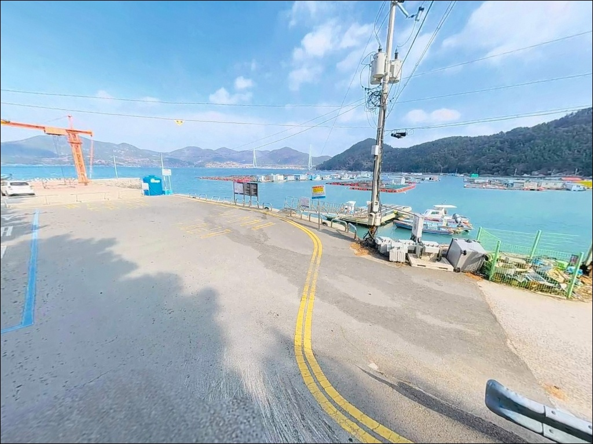
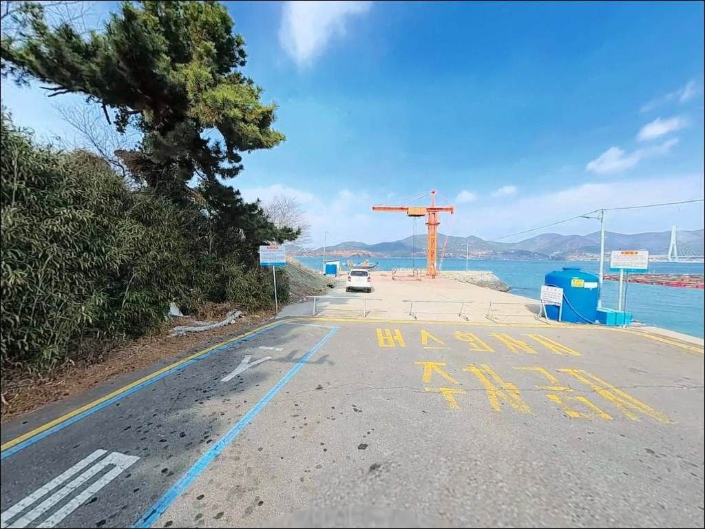
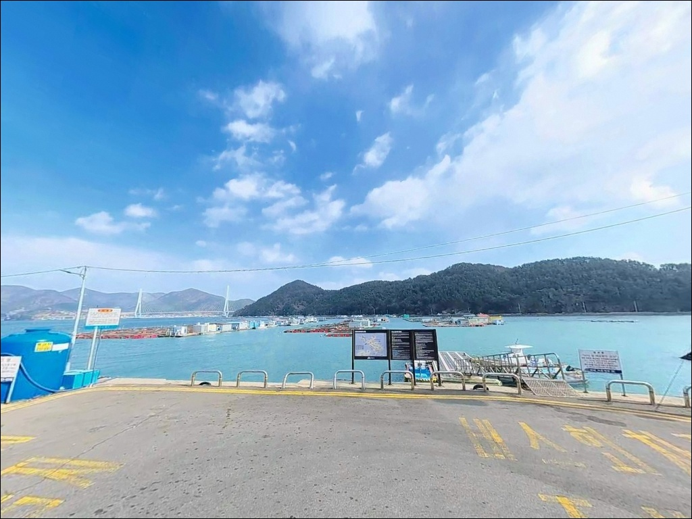
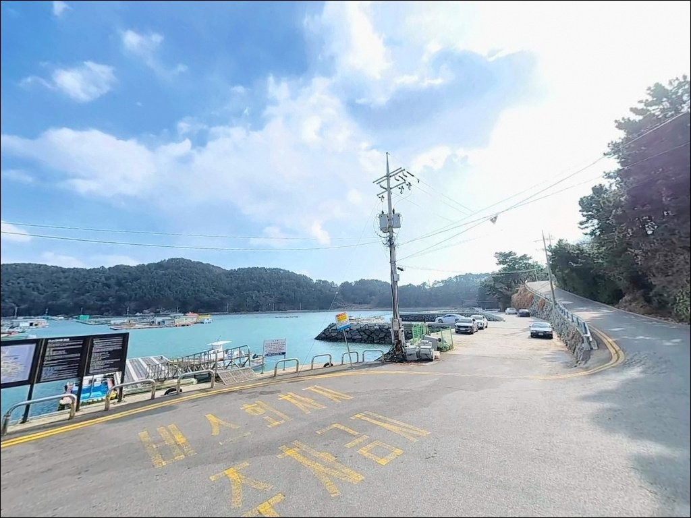
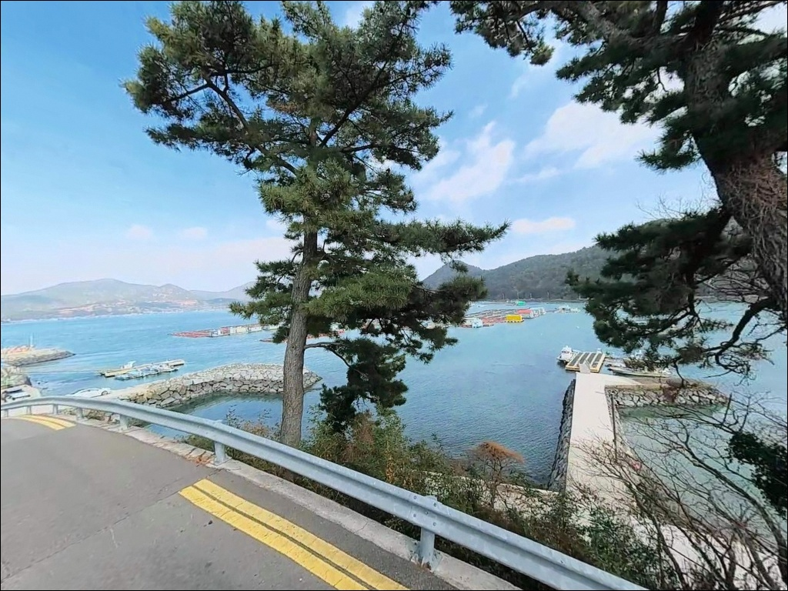
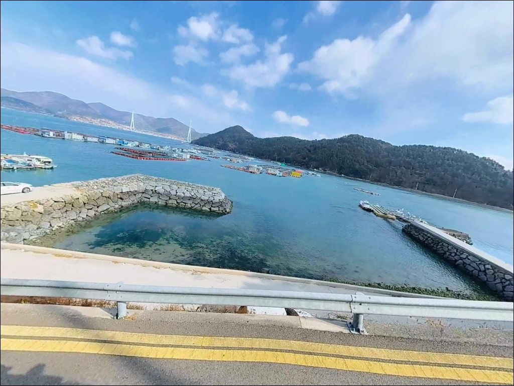

선착장 코앞에서 막힐 때, 여수 화태도 묘두선착장 진입로와 찌낚시 여건
이 페이지에는 광고(제휴 링크 포함)가 있으며, 광고 링크를 통해 구매하면 운영자가 판매 수익 또는 수수료를 받을 수 있습니다. 포인트 사진: 카카오맵 스카이뷰·로드뷰. 이 페이지의 지도·사진 이미지는 카카오맵의 실제 서비스 이미지와 다를 수 있습니다.

포인트 안내
묘두선착장
전남 여수시 남면 화태리 507-42
화태대교를 건넌 뒤 마을 안쪽으로 이어지는
좁은 진입로를 사전에 확인하지 않으면,
선착장 코앞에서 회차가 막혀 헛걸음이 되는
구조입니다.
이 글은 묘두선착장의 진입 여건, 차박 조건,
낚시 스타일별 공략 방향에 집중합니다.
조황 단정이나 특정 어종 보장은
이 글의 범위에 포함되지 않습니다.
화태도는 2015년 화태대교 개통 이후
차량 접근이 가능해진 섬입니다.
묘두선착장은 화태도 내 소규모 어항으로,
다도해해상국립공원 구역에 포함되어 있어
차박·야영 전 반드시 구역 규정을 확인해야 합니다.

1. 진입 동선과 차량 접근 조건
여수 시내에서 돌산읍 방향으로 이동한 뒤
화태대교(국도 77호선)를 건너면 화태도에 진입합니다.
화태대교는 왕복 2차선 교량으로
차량 통행에 큰 제약은 없습니다.
다리를 건넌 후 묘두길 방향으로 이어지는
마을 진입로는 소형 포장도로 수준이며,
구간에 따라 교행이 어려운 폭이 나옵니다.
대형 SUV나 장비를 갖춘 차량이라면
출발 전 위성지도로 묘두길 진입 구간을
확인하는 편이 안전합니다.
선착장 입구 물양장 평탄면 또는
진입 전 해안가 공터가 주차 후보입니다.
어선 하적·계류 구역은 주차 대상에서 제외하고,
어선 이동 동선을 막지 않는 자리를 우선 잡아야 합니다.
선착장 끝단 물양장에서 회차가 가능한 구조이며,
소형 차량 기준으로 진입과 이탈이 무리 없는 편입니다.
캠핑카나 카라반은 진입 전 도로 폭을
충분히 점검하고 판단하는 것이 현명합니다.

2. 차박 환경과 야간 체류 조건
묘두마을은 화태도 내 소규모 자연부락으로
민가 밀집도가 낮은 편입니다.
야간에는 차량 통행이 거의 없어
조용한 분위기가 유지되며,
프라이버시 측면에서는 양호한 여건입니다.
다만 가로등 설치가 제한적인 구간이 있어
개인 조명 장비를 반드시 챙겨야 합니다.
화태도 전체가 다도해해상국립공원 구역에 포함됩니다.
국립공원 내 지정 장소 외 야영·취사는
원칙적으로 허용되지 않으므로,
출발 전 국립공원관리공단 남해안사무소에
차박 가능 여부를 사전 확인하는 것이
가장 안전한 준비입니다.
주차 공간이 좁아 차박을 메인 목적으로 삼기보다는
낚시 후 단기 체류 용도로 접근하는 편이
현실적입니다.
화태도는 외해 직결보다 만 안쪽의
잔잔한 환경이라 바람 영향은 상대적으로 완만합니다.


3. 주변 편의시설과 인프라 현황
묘두마을 내에는 식당이 없습니다.
편의점·마트·주유소도 선착장 반경 3km 이내에서는
기대하기 어렵습니다.
완전 자급 체제로 진입하는 것이
현실적인 준비 방식이며,
식수·얼음·낚시 소품·연료는
출발 전에 모두 갖춰야 합니다.
화태대교를 건너 돌산읍 방향으로
5~8km 이동하면 편의점, 식당, 주유소가
밀집된 구간에 닿습니다.
돌산읍 농협 하나로마트에서
장거리 낚시에 필요한 물자를 미리 챙기는 편이
가장 효율적인 준비 동선입니다.
응급 상황 발생 시 화태대교를 경유해
여수 시내 의료시설까지 약 30~40분이 소요됩니다.
비상약품과 충분한 수분은
기본으로 준비하는 편이 좋습니다.

4. 방문 전 반드시 챙겨야 할 준비사항
묘두선착장 방문 전에 가장 먼저 확인할 것은
물때입니다.
화태도와 돌산도 사이 수로 구간은
조류 흐름이 꾸준히 발생하는 지형 조건이라,
사리 전후에는 강한 조류로
채비 운용이 까다로워집니다.
바다타임에서 여수 남면 기준 물때를 확인하고,
조금 전후 또는 만조 전후를 노려
출발 시각을 맞추는 것이 기본 전략입니다.
섬 지역 특성상 기상 변화가 빠르므로
기상청 해상예보를 당일 아침 다시 한번 확인하는 것이
포인트 낭비를 막는 조건입니다.
암반 지형 주변에서 낚시할 경우
채비 손실이 잦으니 여분 채비를 넉넉하게 준비하는 편이 좋습니다.
마을 선착장이라 어선 조업이 이루어지는 공간입니다.
통발·그물 등 어구가 쌓인 구역은 피해서
주차하고 낚시를 진행해야 합니다.
화태대교 개통 이후 방문객 증가로
쓰레기 문제가 제기된 지역인 만큼,
밑밥 찌꺼기 포함 모든 쓰레기는
육지로 반출하는 것이 기본 매너입니다.

5. 지형 기반 낚시 여건 분석
묘두선착장은 화태도 해안선에 자리한
소규모 어항으로, 선착장 발판은 석축 기반으로
안정적인 편입니다.
주변 해안은 암반으로 이루어져 있으며,
수중 여밭이 발달한 구조로
볼락·노래미 등 록피시 계열 어종의
은신처가 형성되기 좋은 지형입니다.
선착장 끝단과 측면 모서리 쪽은
수심이 한 번 꺾이는 경계가 생기는 구간입니다.
내항 쪽은 수심이 완만하게 형성되고,
선착장 외곽 암반 지대에서는
수심이 급변하는 구간이 나타나는
편입니다.
바닥은 암반과 사니질이 교차하는 혼합 구조로,
원투와 루어 모두 운용이 가능한 조건입니다.
화태도 일대는 주변에 양식 가두리가
다수 운영 중인 해역입니다.
가두리 주변 수역은 먹이 유입 구조가 형성되어
다양한 어종이 접근하기 유리한 환경입니다.
출조 전 화태도 낚시 조황을
최신 정보로 검색해 보시기 바랍니다.


6. 이 포인트에 어울리는 낚시 스타일
감성돔 찌낚시는 묘두선착장 지형에 잘 맞는 방식입니다.
화태도와 돌산도 사이 수로 구간은
조류 흐름이 꾸준히 살아 있어
본류대를 태워 찌를 흘리는 방식이 유효합니다.
가을철이 감성돔 찌낚시 시즌의 중심이며,
사리 전후 강한 조류 타이밍은 피하는 편이 좋습니다.
에깅도 이 포인트 지형 조건에 잘 맞습니다.
석축 선착장 주변과 수중여 사이 구간에서
에기를 운용하면 갑오징어와 무늬오징어를
노릴 수 있는 환경입니다.
봄~여름이 갑오징어 활성기이며,
암반 경계선을 따라 탐색하는 방식이
이 포인트에 어울립니다.
볼락 라이트게임은 야간 입장에 적합한 방식입니다.
암반 여밭이 발달한 지형은 볼락이 자리 잡기 좋은 구조이며,
집어등을 활용한 야간 소형 지그헤드 채비로
선착장 주변 암초 경계를 천천히 탐색하는 방식이
유효한 편입니다.
원투낚시도 이 포인트 구조에 운용이 가능합니다.
암반과 사니질이 교차하는 바닥 구조에서
정조 타이밍을 맞춰 채비를 멀리 보내면
붕장어 등 바닥층 어종을
기대해 볼 수 있는 조건입니다.

7. 대안 포인트와 플랜 B 동선
묘두선착장 자리 여건이 여의치 않거나
바람 방향이 맞지 않을 때
첫 번째 대안은 독정항 방파제입니다.
화태도 내 어촌정주어항으로
묘두에서 약 3~4km 거리에 위치하며,
발판이 안정적이고 다양한 낚시 방식을
운용하기에 공간 여건이 더 넉넉합니다.
화태도 남단의 문여방파제는
화태도 내에서 낚시 포인트로 가장 알려진 곳입니다.
묘두에서 7~8km 거리이며,
감성돔·갑오징어 시즌에 함께 묶어
돌아보기 좋은 대안 포인트입니다.
화태항 방파제는 화태도 내 메인 항구입니다.
공간이 넓고 발판이 좋아
묘두선착장보다 낚시 여건이
안정적인 편입니다.
화태항 인근에는 수입 상가와 식당도 존재해
편의시설 활용이 가능한 대안 포인트입니다.

조류와 암반이 함께 있는 곳,
준비된 만큼 답이 나오는 포인트입니다
감성돔 찌낚시나 갑오징어 에깅을 즐기는 낚시인이라면
묘두선착장의 석축 발판과 암반 여밭 구조는
잘 맞는 조건입니다.
온라인에 직접 자료가 많지 않아
발품을 팔아야 하는 포인트지만,
화태도라는 섬 특성상 회유성 어종의
접근 루트가 형성되는 환경입니다.
반면 진입로 사전 확인 없이 찾아가거나
편의시설을 기대하고 방문하면
낚시보다 이동에 시간을 쓰는 상황이
될 수 있습니다.
물때 확인, 자급 준비, 진입로 점검,
국립공원 야영 가능 여부 확인,
이 네 가지를 갖추고 간다면
기억에 남는 출조가 될 수 있는 포인트입니다.
편의시설 없는 조용한 섬 마을에서
암반 여밭 옆에 자리를 깔고
하룻밤 머무는 차박 여행자라면,
국립공원 야영 가능 여부만 미리 확인해두면
낚시와 차박을 동시에 즐기기 좋은
출조가 될 수 있습니다.